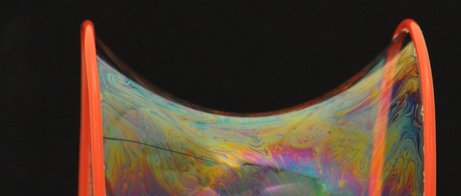

Day 30 - Calculus of Variations#

Announcements#
Midterm 2 is posted
Look for feedback from DC on projects
Seminars this Week#
MONDAY, March 31, 2025#
Condensed Matter Seminar 4:10 pm,1400 BPS, Justin Wilson, Louisiana State University, Title: Measurement and Feedback Driven Adaptive Dynamics in the Classical and Quantum Kicked Top
TUESDAY, April 1, 2025#
Theory Seminar, 11:00am., FRIB 1200, Kazuyuki Ogata, Kyushu University, Title: “Knock It Out of the Nucleus -Structure of Nuclei Revealed by Knockout Reactions”
High Energy Physics Seminar, 1:00 pm, 1400 BPS, Manel Errando, Washington University in St. Louis, Title: Extracting Meson Distribution Amplitudes from Nonlocal Euclidean Correlations at Next-to-Next-to-Leading Order
Seminars this Week#
WEDNESDAY, April 2, 2025#
Astronomy Seminar, 1:30 pm, 1400 BPS, Andy Tzandikas, Univ. of Washington, Title: Searching for the Rarest Stellar Occultations
PER Seminar, 3:00 pm., BPS 1400, Abigail Daane, Professor of Physics, South Seattle College, Title: The obstacles, stumbles, and growth in examining the “decolonization” of physics education
THURSDAY, April 3, 2025#
Colloquium, 3:30 pm, 1415 BPS, Alex Sushkov, Boston University, Title: Nuclear magnetic resonance at the quantum sensitivity limit
Clicker Question 30-1#
The generic segment, \(ds\), of a curve in 2D Cartesian coordinates is given by
The integral of \(ds\) from \(s_1\) to \(s_2\) gives the length of the curve, \(l\). What is the correct expression for \(l\)?
\(l = \int_{s_1}^{s_2} ds\)
\(l = \int_{s_1}^{s_2} \sqrt{(dx)^2 + (dy)^2}\)
\(l = \int_{s_1}^{s_2} \sqrt{1 + (dy/dx)^2} \, dx\)
\(l = \int_{s_1}^{s_2} \sqrt{(dx/dy)^2 + 1} \, dy\)
More than one of the above
Clicker Question 30-2#
I can explain why:
where \(Y(x) = y(x) + \alpha \eta(x)\), the true path plus an error term.
Yes, I can explain why
I think I can explain why
I’m having trouble seeing why
I don’t think I can explain why
Clicker Question 30-3#
For the function \(Y(x) = y(x) + \alpha \eta(x)\), where \(y(x)\) is the true path, \(\eta(x)\) is a small error term, and \(\alpha\) is a small parameter, what is the derivative of \(Y(x)\) with respect to \(\alpha\)?
\(y(x)\)
\(\eta(x)\)
\(\eta'(x)\)
\(\alpha \eta(x)\)
\(y'(x) + \alpha \eta'(x)\)
Clicker Question 30-4#
For the function \(Y'(x) = y'(x) + \alpha \eta'(x)\), what is the derivative of \(Y'(x)\) with respect to \(\alpha\)?
\(y'(x)\)
\(\eta'(x)\)
\(\eta''(x)\)
\(\alpha \eta'(x)\)
\(y''(x) + \alpha \eta''(x)\)
Clicker Question 30-5#
The “surface term” that we computed for \(\int_{s_1}^{s_2} \eta'(x) \frac{df}{dy'} dx\) is:
I can explain why this surface term is equal to zero:
Yes, I can explain why
I think I can explain why
I’m having trouble seeing why
I don’t think I can explain why
I don’t know what a surface term is
Clicker Question 30-6#
We completed this derivation with the following mathematical statement:
where \(\eta(x)\) is an arbitrary function. What does this imply about the term in square brackets?
The term in square brackets must be a pure function of \(x\).
The term in square brackets must be a pure function of \(y\).
The term in square brackets must be a pure function of \(y'\).
The term in square brackets must be zero.
The term in square brackets must be a non-zero constant.